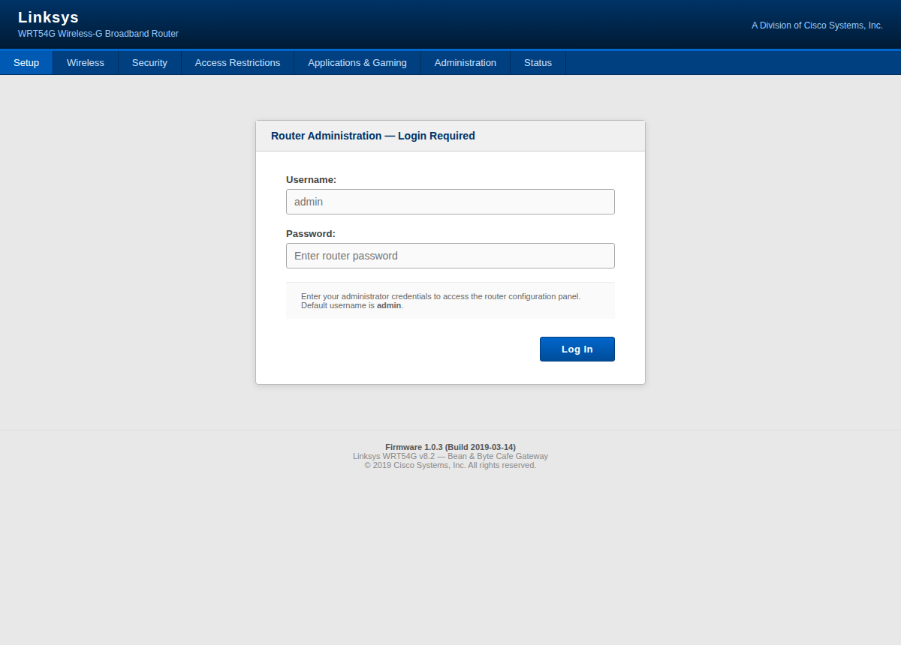
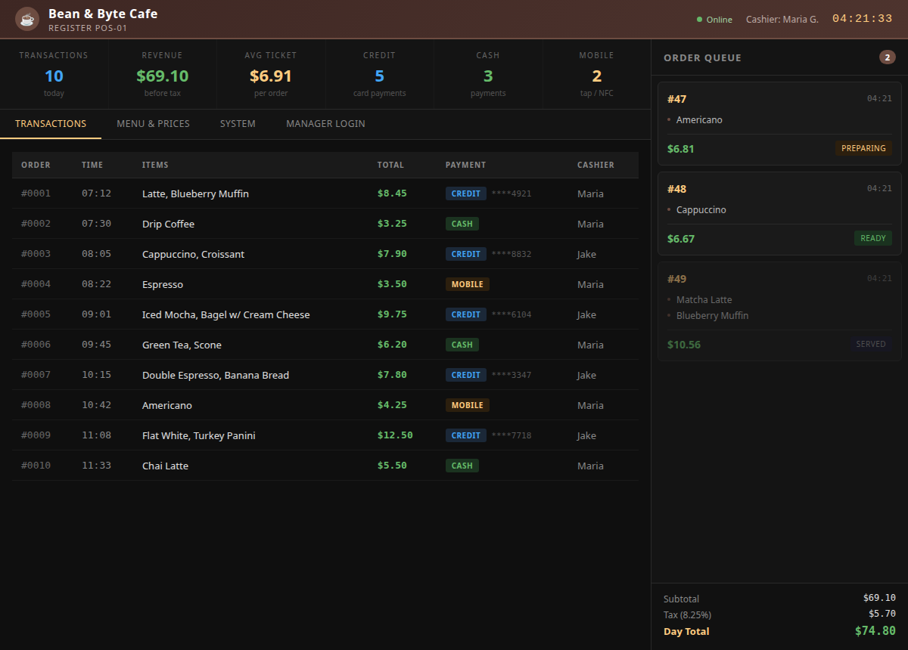

Exercise 1A: Who's on the Wire
Engagement Status
Client: Bean & Byte Cafe Role: Security Auditor Phase: Reconnaissance Service Enumeration Exploitation Detection
What you know so far:
- The cafe owner hired you after a customer's bank account was compromised
- There are reportedly 9 devices on the network
- No one has ever done a security review
Your task: Map the entire cafe network. Find every device, identify what services they're running, and collect three flag tokens hidden in service responses. Flag tokens in service responses are prefixed with OCR-SN: to help you identify them. When assembling your flag, use only the token value after the prefix. For example, if you find OCR-SN:<TOKEN>, your token is c4f3.
Objective
Perform a full network discovery of the Bean & Byte Cafe network. Identify all 9 devices, determine what services each one is running, and collect the three flag tokens hidden in service responses across the network. Tokens are marked with the OCR-SN: prefix in service output.
Difficulty: Beginner Estimated time: 30 minutes
Background: Why Network Discovery Comes First
Network discovery is always step one in any security engagement. Before you can test for vulnerabilities, you need a complete picture of what's on the network.
In a small business like a coffee shop, you'll often find a surprising mix of devices:
- Standard IT equipment: workstations, printers, NAS drives
- Point-of-sale systems: handling payment card data
- IoT devices: smart thermostats, security cameras, digital signage
None of these devices were designed to coexist securely on the same network. The cafe owner plugged them in. Your job is to find out exactly what's there.
How Network Scanning Works
flowchart LR
A[Your Machine] -->|Ping Sweep| B[Find Live Hosts]
B -->|Port Scan| C[Find Open Ports]
C -->|Version Scan| D[Identify Services]
D -->|Protocol Queries| E[Extract Details]- Ping sweep: Send ICMP echo requests to every address in the subnet. Live hosts reply.
- Port scan: Probe each live host for open TCP/UDP ports.
- Version detection: Connect to each open port and fingerprint the service software.
- Protocol-specific queries: Use HTTP, SNMP, SMB, etc. to pull detailed information.
Tools You'll Need
| Tool | Purpose | Example |
|---|---|---|
nmap |
Host discovery and service scanning | nmap -sV 10.x.x.x |
curl |
Pull web page content | curl -s http://10.x.x.x/ |
snmpwalk |
Enumerate all SNMP data from a device | snmpwalk -v2c -c public 10.x.x.x |
smbclient |
List SMB shares and server info | smbclient -L //10.x.x.x -N |
All of these are available in most penetration testing distributions (Kali, Parrot, etc.).
Flag Progress
The flag has 3 parts. Collect all three and combine them in order:
| Part | Source | Token | Found? |
|---|---|---|---|
| 1 | Gateway HTTP page title | ________ |
|
| 2 | Gateway SNMP system description (UDP 161) | ________ |
|
| 3 | Barista workstation SMB server string | ________ |
Assembled flag format: OCR{________}
Solution Walkthrough
Independent Mode
Want to try this on your own? You have everything you need above: the objective, the tools, and the flag progress table. Skip the walkthrough and come back if you get stuck. Hints are available in the platform after 5, 12, and 18 minutes.
Step 1: Find Your Network
When the lab starts, you're connected to the cafe's network via VPN. First, identify your subnet:
Look for your VPN interface (tun0 or similar). Note the IP address and subnet: it will be something like 10.x.x.x/24.
What does /24 mean?
A /24 subnet means the first three octets are the network address and the last octet identifies individual hosts. That gives you 254 usable addresses (.1 through .254) to scan.
Step 2: Discover Live Hosts
Run a ping sweep to find every device on the network:
The -sn flag means "ping scan only": no port scanning yet. A ping scan is fast and gives you a list of live hosts.
Expected Output
You should see 9 hosts reported as up. If you see fewer, some devices may not respond to ICMP: try TCP-based discovery:
Write it down
Record all 9 IP addresses. You'll need them throughout this exercise and in future exercises.
Step 3: Service Version Scan
Now find out what each device is running. A service version scan probes each open port and fingerprints the software:
The scan takes a minute or two. When it finishes, you'll see each host with its open ports, protocols, and service versions.
Expected Output (partial)
Where is SNMP?
A default nmap -sV scan only checks TCP ports. SNMP runs on UDP port 161, so it won't appear in a TCP scan. You need a separate UDP scan to find it.
Step 3b: UDP Service Scan
Some important services run over UDP instead of TCP. SNMP (port 161) is one of the most common. A full UDP scan of the entire subnet is slow, so target the ports you care about:
| Flag | Meaning |
|---|---|
-sU |
UDP scan (instead of the default TCP scan) |
-p 161 |
Only scan port 161 (SNMP) |
--open |
Only show hosts where the port is open |
You should see one host with UDP port 161 open: the gateway. An open port 161 confirms the gateway is running SNMP, which you will query in Step 6.
Why not scan all UDP ports?
A full UDP scan (nmap -sU) across 65,535 ports is extremely slow because UDP has no handshake. Unlike TCP, where a closed port sends back a RST packet immediately, a closed UDP port may simply not respond, forcing nmap to wait for a timeout on every probe. In practice, penetration testers scan a targeted list of common UDP ports (SNMP 161, DNS 53, TFTP 69, NTP 123) rather than scanning the full range.
Step 4: Build Your Device Map
Using the scan results, start classifying each device:
| IP Address | Open Ports | Services | Probable Device |
|---|---|---|---|
| x.x.x.1 | 80, 443, 161/udp | HTTP, HTTPS, SNMP | Gateway/Router |
| x.x.x.17 | 8080 | HTTP (Python) | POS Terminal |
| x.x.x.23 | 22, 445, 3389 | SSH, SMB, RDP | Barista Workstation |
| x.x.x.42 | 9100, 631 | JetDirect, CUPS | Network Printer |
| x.x.x.51 | 80, 23 | HTTP, Telnet | Smart Thermostat |
| x.x.x.67 | 80, 554, 23 | HTTP, RTSP, Telnet | Security Camera DVR |
| x.x.x.89 | 80, 22 | HTTP, SSH | Menu Display |
| x.x.x.127 | 22, 445, 8443 | SSH, SMB, HTTPS | NAS Backup |
| x.x.x.200 | - | - | Customer Laptop |
Notice anything?
Every single device is reachable from your position on the network. The POS terminal that handles credit cards sits on the same subnet as a random customer's laptop. That's a problem.
Step 5: Extract Flag Part 1: Gateway HTTP Title
The gateway is running a web server on port 80. Pull the page and check the title:
What you should see
The <title> tag contains the first flag token, prefixed with OCR-SN:. Look for a value starting with OCR-SN:: the token is the part after the prefix. Write it down as Part 1.
See it in the browser
curl shows you the raw HTML, but the gateway serves a full admin console. Browse to http://<gateway_ip>/ to see the Linksys router login page. The same flag token that appears in the page title is what curl pulled out.

Step 6: Extract Flag Part 2: Gateway SNMP
The gateway also runs SNMP on UDP port 161. SNMP (Simple Network Management Protocol) is used for network device monitoring, and it often leaks detailed system information when configured with default community strings.
Your UDP scan in Step 3b already confirmed SNMP is running on the gateway. Now you will query it to extract information.
The first thing a penetration tester does with SNMP is walk the device: dump everything it will give you, then read through the output:
| Argument | Meaning |
|---|---|
snmpwalk |
Walk (enumerate) all available SNMP data from the device |
-v2c |
Use SNMP version 2c |
-c public |
Community string: like a password. public is the default read-only string |
The snmpwalk command returns every piece of information the device exposes through SNMP. Read through the output carefully: you will see system descriptions, interface names, uptime counters, and more. The flag token is embedded in one of the early fields.
If the output is long and you want to narrow it down, snmpwalk accepts an OID (Object Identifier) prefix to limit the walk to a specific branch. The system information branch starts at 1.3.6.1.2.1.1:
The OID-scoped walk returns just the system-level fields: description, object ID, uptime, contact, name, location, and services.
What you should see
iso.3.6.1.2.1.1.1.0 = STRING: "Linksys WRT54G v8.2 - Firmware 1.0.3 (Build 2019-03-14) - OCR-SN:<TOKEN> - BeanAndByte Cafe Gateway"
OCR-SN:. The token is the part after the prefix. Write it down as Part 2.
Security Issue
The SNMP community string public is a well-known default. Any device that accepts queries with this string is leaking system information to anyone on the network. We'll come back to this in later exercises.
Step 7: Extract Flag Part 3: Barista Workstation SMB
The barista workstation has SMB (Server Message Block) running on port 445. SMB is the Windows file sharing protocol: it allows machines to share files and printers over a network. Even listing available shares reveals useful information about the system.
7a. List Available Shares
Start by listing what the barista workstation is sharing:
| Argument | Meaning |
|---|---|
-L |
List shares on the target host |
-N |
Null session: connect without a password |
Expected Output
Sharename Type Comment
--------- ---- -------
schedules Disk
IPC$ IPC IPC Service (OCR-SN:<TOKEN> - BaristaPC)
OCR-SN:. The token is the part after the prefix. Write it down as Part 3.
Where is the flag?
Look at the IPC Service (...) line. The server string is set by the SMB configuration and often reveals the machine's hostname or custom label. In this case, a flag token prefixed with OCR-SN: is embedded right at the beginning.
Security Issue
The SMB server string revealed device information without any authentication. Null sessions like this leak system details to anyone on the network, and this workstation also has a guest-accessible file share. We'll dig into that in a later exercise.
Step 8: Assemble and Submit the Flag
Combine the three tokens you found:
Submit this as your flag in the platform.
Step 9: Complete Your Network Inventory (Optional)
A thorough auditor documents everything. Verify each remaining device:
Beyond curl, browse to http://<pos_ip>:8080/ to open the live register. You see the day's transactions, masked card numbers, the order queue, and running totals: everything an attacker on the same subnet would see too.

Beyond curl, browse to http://<thermostat_ip>/ to see the CafeTherm device console: live temperature, set point, HVAC status, and firmware version, all served without authentication.

Beyond curl, browse to http://<dvr_ip>/ to see the HikVision DVR web console login. The firmware version is printed right under the login box, which is exactly the kind of detail that feeds default-credential lookups.

Beyond curl, browse to http://<menu_ip>/ to see the digital menu board exactly as customers see it on the wall screen.

-k flag skips certificate validation (it's self-signed).
Beyond curl, browse to https://<nas_ip>:8443/ (accept the self-signed certificate warning) to open the File Station. The backup directory lists POS database dumps, WiFi logs, and a camera archive: a goldmine of sensitive files sitting on the flat network.

Common Mistakes
Scanning the wrong subnet
Make sure you're scanning the lab network, not your local network. Check ip addr for your VPN interface.
Missing hosts
Some devices may not respond to ICMP pings. If you see fewer than 9 hosts, try nmap -Pn to scan without requiring a ping response.
SNMP timeout
If snmpget times out, verify you're targeting the correct IP (the gateway, not another device). Only the gateway runs SNMP in this exercise.
Flag format
The flag is OCR{________} with underscores separating the tokens. Don't add spaces or change the case.
Key Takeaways
What You Learned
-
Network discovery is non-negotiable. You can't secure what you can't see. The cafe had 9 devices on a flat network with zero segmentation.
-
Default SNMP community strings are everywhere. The
publiccommunity string gave us the gateway's firmware version and hardware model: information that feeds directly into vulnerability research. -
SMB null sessions leak information. We extracted the server identification string without any credentials. In later exercises, you'll discover what else is exposed.
-
IoT devices expand the attack surface. A thermostat, security cameras, and a digital menu sign: none designed with network security as a priority.
-
Flat networks are dangerous. A customer laptop sitting on the same subnet as the payment terminal is a fundamental architectural flaw.
Defensive Recommendations
If you were writing this up for the cafe owner, here's what you'd recommend:
| Finding | Risk | Recommendation |
|---|---|---|
| Flat network: no segmentation | Any device can attack any other device | Implement VLANs: separate POS, IoT, staff, and guest WiFi |
SNMP public community string |
Device info leaked to entire network | Change to a strong, unique community string; restrict SNMP to management VLAN |
| SMB null sessions enabled | Server info exposed without authentication | Disable null sessions; require authentication for all SMB access |
| All management interfaces reachable | Attack surface unnecessarily large | Restrict management ports (SSH, SNMP, web admin) to a management VLAN |
What's Next
You've mapped the network and identified all 9 devices. In the next exercise, you'll observe the network passively: watching what these devices say to each other when they think no one is listening.